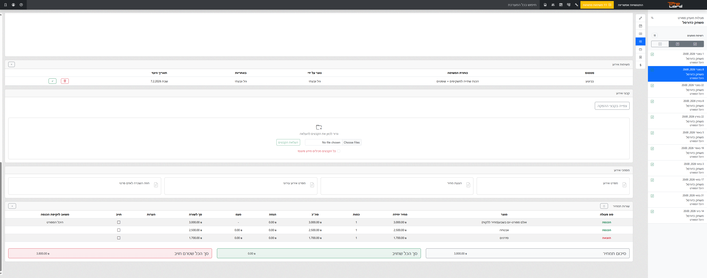
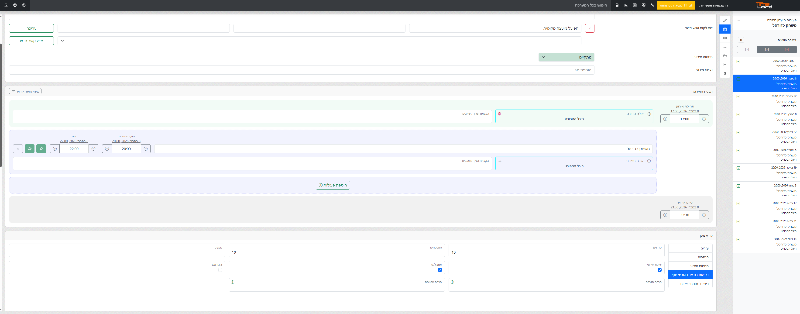

ב-TimeLord כל שיבוץ בלוח – מחוג שבועי ועד אירוע שיא – הופך למקור האמת של הארגון. מקום אחד שמרכז את כל הפרטים, הדרישות והתיעוד.

תמונת מצב אחת שמתעדכנת בזמן אמת. כולם יודעים מה קורה, מתי ואיפה.
מהדרישות הטכניות ועד לתמחור והסיכום – הכל שמור בתוך הפעילות, נגיש ומתועד.
מניעת התנגשויות בחללים, כפל שיבוצים ושמירה על הזיכרון הארגוני בחירום.
תיק הפעילות של TimeLord מרכז את כל מה שחשוב: החל מהפקה וזמנים ועד לניהול משימות, קבצים ותמחיר מלא. המידע זורם אוטומטית בין המחלקות השונות.
ב-TimeLord, גם פעילויות שבוטלו נשארות מתועדות. זהו כלי קריטי להפקת דוחות בדיעבד או הגשת בקשות לפיצויים בחירום.


| היכולת | יומן רגיל / אקסל | TimeLord |
|---|---|---|
| מניעת כפל שיבוצים | ✕ | ✔ |
| תיק אירוע דיגיטלי מלא | ✕ | ✔ |
| הפקת דוחות בלחיצת כפתור | ✕ | ✔ |
| שימור ידע ארגוני בחירום | ✕ | ✔ |
כל נתון שמוזן למערכת הופך אוטומטית לבר-דיווח. החל מדוחות תפעוליים ועד דוחות גזברות ומשרד התרבות.


"מאז שעברנו ל-TimeLord, נחסך לנו המון זמן עבודה והכל הרבה יותר שקוף לצוות. הדיווחים מוכנים בלחיצת כפתור."
"השקט לדעת שכל פעילות מתועדת וששום דבר לא נופל בין הכיסאות. היא פשוט עמוד השדרה של התפעול אצלנו."
הצטרפו למנהלי התרבות שסוגרים את החודש בביטחון מלא.